Time Synchronisation
How an embedded device keeps time with a crystal and a counter, why every crystal drifts, and how distributed devices agree on the time: with GPS, with message exchanges such as NTP and PTP, or with a shared reference event.
Keeping time on one device
Time keeping in distributed embedded systems
When do embedded systems need to know the time?
Almost everything an embedded device does is "at the right moment": wake up the radio, give up waiting for a reply, read a sensor every ten seconds, ring an alarm.
A car (slide 3) has dozens of such devices on its networks. As soon as one of them has to compare its events with another's, for example to combine sensor readings, they need to agree on the time, not just each keep their own.
- System-level functions: schedule periodic system events, schedule timeouts, schedule wake-up events, generate clock signals, and more.
- Application-level functions: schedule periodic events, timestamp distributed events or sensor data (data fusion), alarms, real-world time for the user, and more.
- Some of these only need a local sense of time (a timeout), some need devices to agree with each other (fusing readings from several nodes), and some need agreement with true time (showing the user the time of day). The rest of the lecture follows that progression.
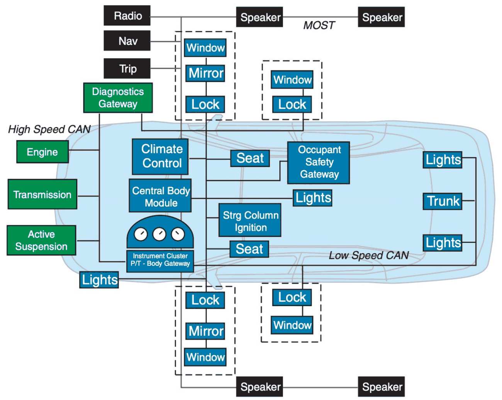
Oscillators
The heartbeat a device counts
A device has no sense of time on its own. It needs something that ticks very regularly, like a pendulum in a grandfather clock, and then it counts the ticks.
In electronics the pendulum is a crystal oscillator: a tiny slice of quartz that vibrates at a precise frequency when it is placed in the right circuit.
- A crystal oscillator is a component that generates a signal at a specific frequency, from kHz to GHz.
- Oscillators are used to keep track of time: counting their periods measures time.
- Oscillators can be internal (inside the MCU) or external. Slide 5 shows an external crystal between the MCU's
X32K1andX32K2pins, with a load capacitor from each pin to ground. - A 32768 Hz oscillator completes one period every
T = 1 / f = 1 / 32768 Hz ≈ 30.518 µs32768 = 215, so a 15-bit binary counter driven by it overflows exactly once per second. That is why "watch crystals" use this frequency.
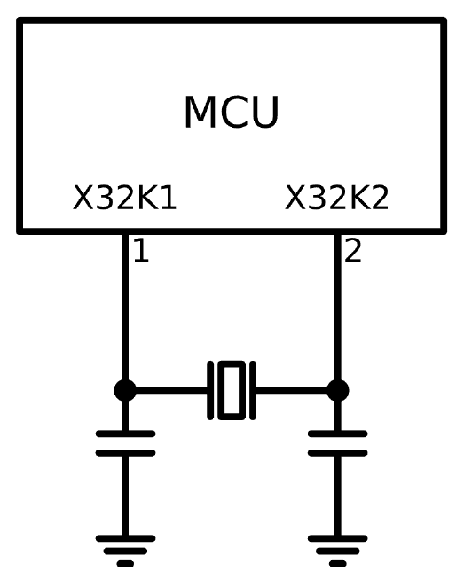
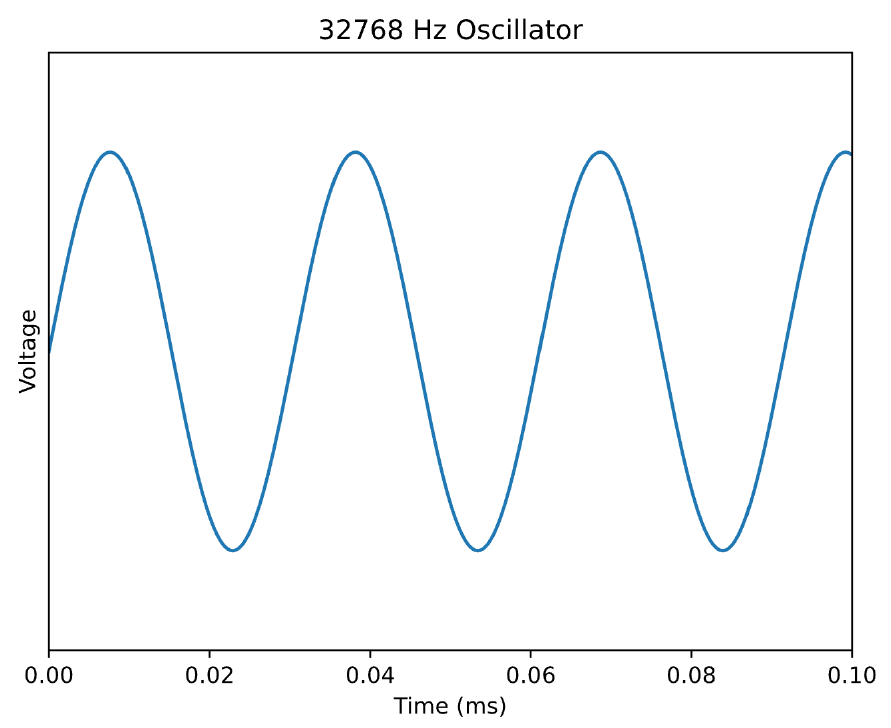
The programmable timer
Count pulses down to zero, then interrupt
Think of a kitchen timer that counts down in clicks instead of seconds. Every tick of the crystal removes one click. When the counter hits zero, it rings: the CPU gets an interrupt.
How many clicks you load decides how long it takes. At 32768 clicks per second, 1000 clicks take about 30 ms.
- The crystal oscillator generates pulses at a specific frequency. On each pulse a counter is decremented; when it reaches zero it generates an event: the clock interrupt.
- The initial value of the counter controls the time until the event. It is kept in a holding register, which is used to load the counter.
- Example from the slide: an initial value of 1000 generates the event after 1000 pulses, or with an f = 32768 Hz crystal after
t = N / f = 1000 / 32768 Hz ≈ 30.5 ms
- This is the same timer peripheral that Week 3 used for the OS tick and for scheduling; here we look at what limits its accuracy.
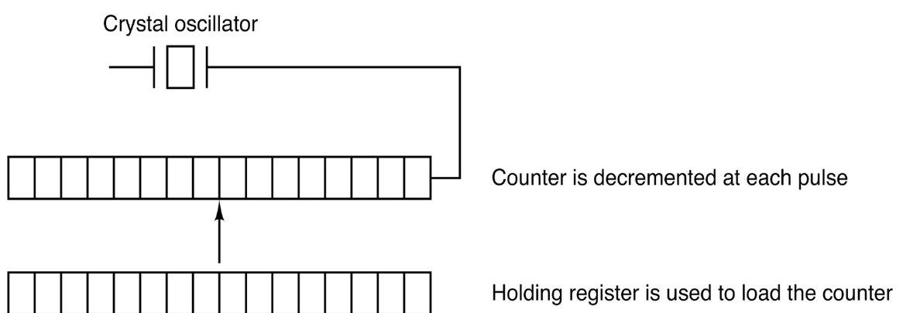
Timer configuration and modes
Prescaler, one-off and periodic
A prescaler is a gearbox: it lets the counter take one step every N crystal ticks instead of every tick, so the same counter can measure much longer times.
Then you choose whether the kitchen timer rings once and stops (one-off), or resets itself and keeps ringing at a steady rhythm (periodic).
- Prescaler: decreases the timer frequency by decrementing the counter every N oscillator pulses:
ftimer = fosc / N tevent = initial value / ftimer
- One-off mode: the clock starts with the initial value and issues an interrupt when it reaches zero. Good for one-off timeouts and alarms.
- Periodic mode (or square-wave mode): the clock automatically restarts after the interrupt is issued. Good for periodic events. The period is controlled by the timer frequency and the initial counter value.
- The trade-off: a larger prescaler reaches longer intervals with the same counter width, but each count becomes coarser.
Time resolution and two crystals
Clocks measure in ticks, not seconds
A ruler with only centimetre marks cannot measure a millimetre. A clock is the same: it can only tell you how many ticks passed, so anything shorter than one tick is invisible.
Faster crystals give finer marks but use more energy. So devices often carry two: a fast one for when they are busy, and a slow, frugal one that keeps time while they sleep.
- The resolution of timestamps, time intervals, etc. depends on the crystal frequency. Clocks measure time in ticks:
tick = 1 / f 32 kHz: 30.518 µs | 24 MHz: 41.667 nsSlide 8 prints the 24 MHz tick as "41.667 ps"; the correct unit is nanoseconds (1 / 24 × 106 s = 41.667 × 10-9 s).
- Trade-off: higher frequency means higher energy consumption.
- Embedded devices therefore often have two clocks, with two crystals:
- a high-frequency crystal used in active modes to clock the CPU and high-speed peripherals and to measure time with high resolution;
- a low-power low-frequency crystal, typically 32 kHz, that keeps the real time even when the system is off and schedules wake-up events.
- Slide 9: the CC2650 has exactly that pair, a 32.768 kHz crystal (X2) and a 24 MHz crystal (X1). Week 3's HF versus LF timer choice is the same trade-off seen from the software side.
- A measured interval is always a whole number of ticks, so its error is up to one tick, depending on where the interval starts within a tick.
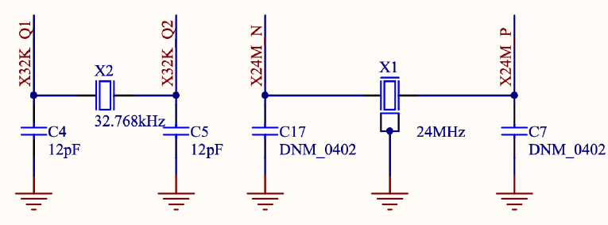
Example: an uptime counter
Count the seconds since boot. How hard can it be?
We want to know how many seconds have passed since the device was switched on. Easy: set the timer to ring every second and add one to a counter each time it rings.
The slide then asks the trick question: after exactly one day, does the counter really say 86400? Only if the crystal is perfect, and no crystal is.
- Implementation (slide 10): a timer based on a 32768 Hz crystal oscillator; on boot initialise a
uint32UPTIMEvariable at 0; set a periodic timer with starting value 32768; on each timeout event, incrementUPTIME. - Question: after exactly one day (86400 seconds), what is the value of the counter?
- Nominally 32768 pulses take 1 s, so
UPTIME= 86400. In reality the crystal runs slightly off its nominal frequency, so the count is off too: with a ±20 ppm crystal by up to about ±1.7 s per day (next topics). - A wrong start value is a systematic error of its own: loading 32767 makes every "second" one pulse short, about 30.5 ppm fast.
- A
uint32counting seconds overflows after 232 s, about 136 years, so overflow is not the issue here.
Clock drift
Clock drift
Precise, but imperfect: parts per million
Every crystal is made with a tiny manufacturing error, so it ticks a little too fast or a little too slow. "20 ppm" means at most 20 extra or missing ticks per million.
That sounds like nothing, but a clock runs all day, every day. Twenty millionths of a day is almost two seconds.
- Production spread: all electronic components are manufactured with some error from their nominal value. The worst-case error is specified in the datasheet.
- Crystal oscillators are precise but imperfect: they are produced with a frequency variance, so their actual frequency is slightly different from the nominal.
- The error is measured in ppm (parts per million) or ppb (parts per billion):
1 ppm = 10-6 = 0.0001% factual = fnominal × (1 + drift)The FC-135 crystal, for example, has a maximum drift of ±20 ppm.
- Example: a 32768 Hz crystal with ±20 ppm maximum drift has an actual frequency somewhere between 32767.34464 Hz and 32768.65536 Hz, so its period is between 30516.97 ns and 30518.19 ns. "It looks tiny, but it adds up!"
- The accumulated error is the drift times the elapsed time:
error = drift × t 20 ppm × 86400 s ≈ 1.73 s per day
Error
Negligible in the short term, significant in the long term
Error is how far the device's clock is from the real time. A slow clock falls behind (positive error), a fast one runs ahead (negative).
Like a watch that loses a few seconds a week: after a minute you cannot tell, after a month you can.
- Error is defined as the difference between the true time passed and the value of
UPTIME:error = ttrue - UPTIME ≈ -drift × ttrue - Error can be positive or negative: a negative drift (slow crystal) gives a positive error, which is why the -ppm curves on slide 12 rise.
- Time error adds up: negligible in the short term, significant in the long term.
- For a constant drift the error grows linearly. The curves on slide 12 bend upwards only because the time axis is logarithmic (1 m, 1 h, 1 d, 1 w). Switch the lab below between log and linear to see it.
- Reading values off that chart: 20 ppm for one week is 20 × 10-6 × 604800 s ≈ 12.1 s, while the ±20 ppm curves end near 8.7 s at the "1w" tick (about five days' worth). Use the formula rather than the chart for numbers.
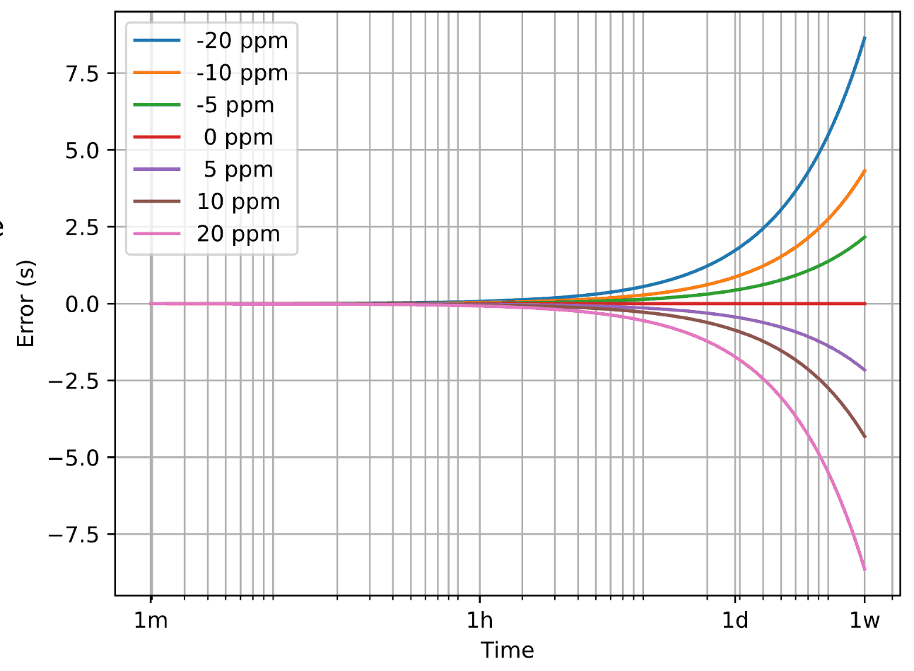
Other sources of clock drift
Ageing and temperature
The manufacturing error is only the start. Crystals also slowly change as they age, and they tick slower when it is very cold or very hot, the way a guitar string goes out of tune with the weather.
All these effects pile on top of each other, so a sensor outside in winter drifts far more than the datasheet's headline number.
- Ageing: systematic changes in frequency with time due to internal changes in the oscillator. The FC-135 ages at most ±3 ppm/year.
- Temperature: crystals are calibrated to yield the nominal frequency at room temperature. They slow down at very low and very high temperatures following a parabolic pattern. The FC-135 drifts at most
Δf / f = -0.04 ppm/°C² × (T - 25 °C)² at -5 °C: -36 ppm
- Different sources of drift add up: total drift = production error + ageing + temperature term.
- Slide 13's figure shows real measurements from a climate chamber: the drift of three nodes versus temperature follows the parabola, peaking near room temperature and falling off towards both ends.
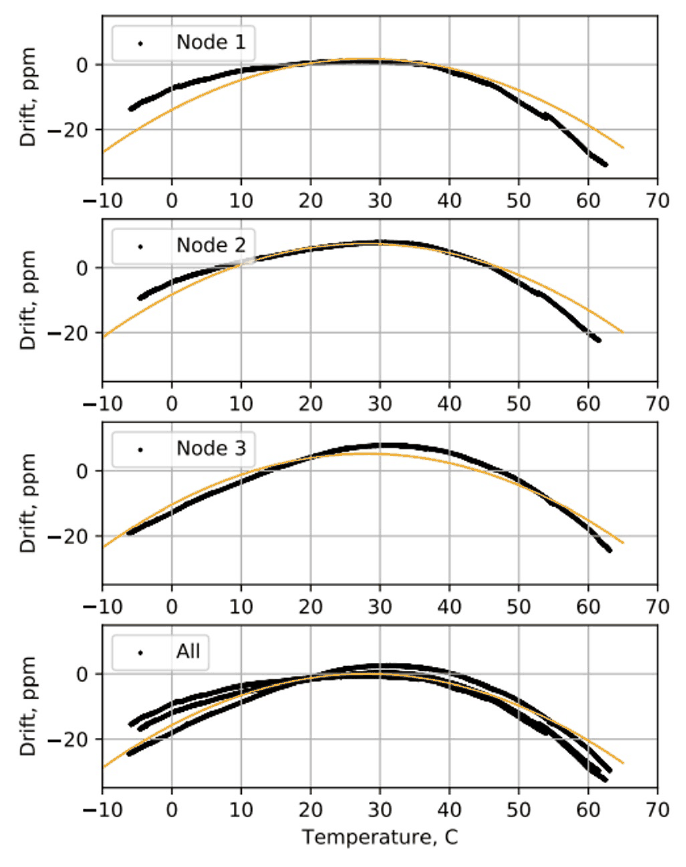
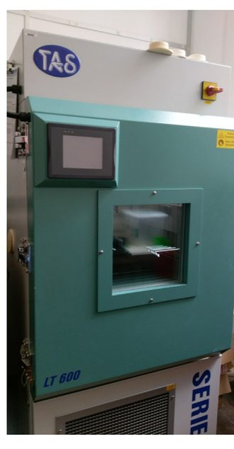
Synchronised blinking and relative clock drift
In sync with each other versus in sync with true time
Press one button that starts two boards at once and let both blink once a second. A minute later they look identical, an hour later one is visibly ahead, and a day later they are seconds apart.
What matters here is not whether each board is right, but whether they agree. Two watches that are both five minutes fast still agree with each other.
- Slide 14: start both MCUs at the same time with one button, blink an LED with a 1 s period using a timer, and observe them 1 minute, 1 hour and 1 day later.
- Clock drift: the rate at which a clock drifts from the true time. For the uptime application we care about being in sync with true time.
- Relative clock drift: the rate at which two clocks drift from each other. For the blinking application we care about the two devices being in sync with each other:
relative drift = MCU1 drift - MCU2 drift
- Two clocks can be in sync with each other but drift from true time: if both drift +10 ppm, the relative drift is 0 ppm.
- The worst-case relative drift is double the individual worst case: with two ±20 ppm oscillators it ranges from -40 ppm (MCU1 -20, MCU2 +20) to +40 ppm (MCU1 +20, MCU2 -20). That is 2.4 ms after a minute, 144 ms after an hour and 3.5 s after a day.
Slide 16 is an in-class design quiz built around the ADXL362 accelerometer datasheet (https://www.analog.com/media/en/technical-documentation/data-sheets/adxl362.pdf); its questions were handed out through a QR code and are not part of the slides.
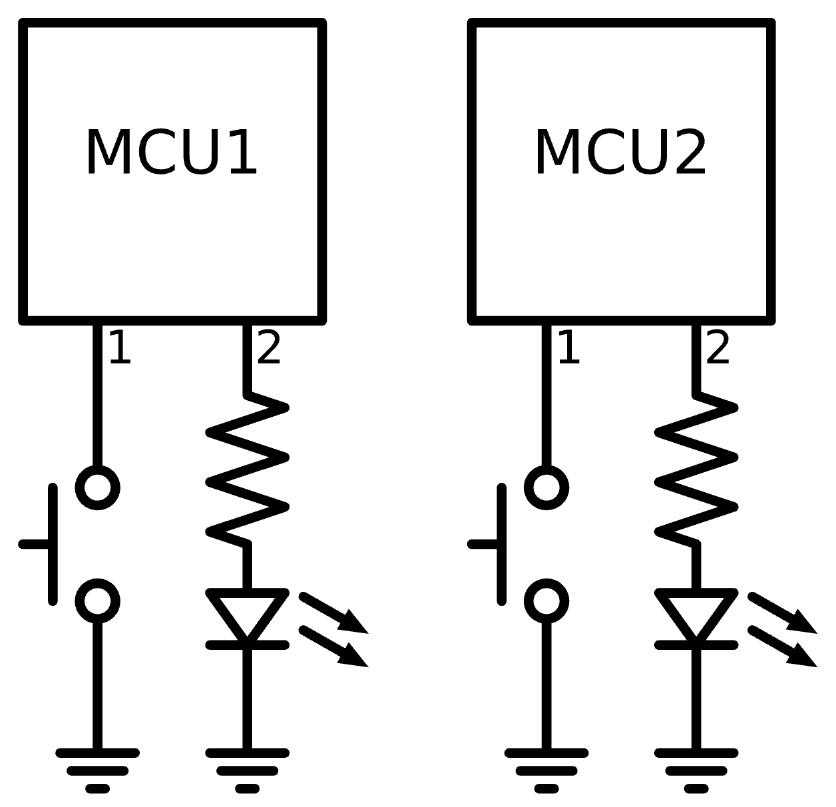
Synchronising with true time
What is true time anyway?
Atomic clocks, TAI and UTC
"True time" comes from atomic clocks: the steadiest ticking we know how to build. Hundreds of them around the world are averaged into one official time.
Clock time on your phone also gets the occasional leap second, so that noon stays roughly when the Sun is highest even though the Earth's rotation is slowing. Atomic clocks are far too expensive for every sensor, so cheap clocks have to check in with a good one now and then.
- Atomic clocks measure time by monitoring the resonant frequency of atoms. They are the most accurate means we have to measure time, and expensive: $30K+.
- International Atomic Time (the slide writes IAT; the official abbreviation is TAI, from the French Temps Atomique International) is a weighted average of over 450 atomic clocks at laboratories worldwide. It is continuous time without leap seconds.
- Coordinated Universal Time (UTC) includes leap seconds because of the Earth's slowing rotation. Local time zones are based on UTC (for example CET is UTC+1).
- Slide 17 says "as of 2022, UTC is 37 seconds ahead of IAT". It is the other way round: each leap second holds UTC back, so TAI is 37 s ahead of UTC (TAI - UTC = 37 s, unchanged since the last leap second at the end of 2016).
- It is too expensive to have an atomic clock in each embedded system, so we periodically synchronise the imperfect clocks, either to true time (GPS, NTP, PTP) or just to each other (reference-based synchronisation).
Unidirectional synchronisation
Send your time; the receiver corrects for the delay
Alice shouts "it is 10:00:00!" across a valley. By the time Bob hears it, the shout has travelled for a moment, so Bob has to add that travel time before setting his watch.
The catch: Bob cannot measure the travel time without already having a synchronised watch. He can only estimate it.
- Alice takes a local timestamp T1, immediately puts it in a packet and sends it to Bob. Bob takes a local timestamp T2 the moment he receives it:
T2 = T1 + D + o o = T2 - T1 - Dwhere D is the message delay and o the time offset (Bob's clock minus Alice's).
- If we know the message delay, we can calculate the offset and synchronise the clocks. But it is impossible to measure the delay unless the two clocks are synchronised in the first place.
- If the delay is relatively stable, it might be possible to calculate or estimate it. The more accurate the estimation, the more accurate the synchronisation: the offset error equals the delay estimation error.
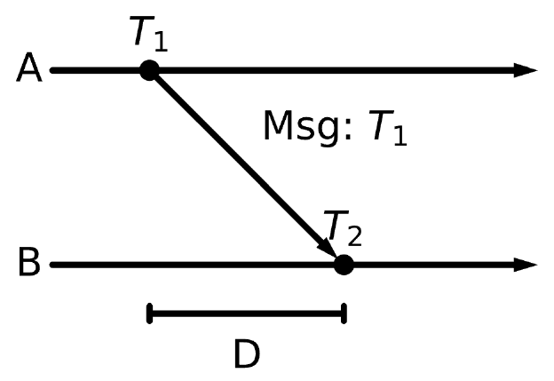
Components of message delay
Some are easy to calculate, some are not
Sending a letter takes time to write it, time in the post-office queue, time in the van and time for the recipient to open it. The van journey is predictable; the queues are not.
For synchronisation, the predictable parts are harmless because we can subtract them. It is the unpredictable waiting that causes errors.
- Operating system delays at the sender:
- scheduling delay: waiting for the OS to run other processes;
- processing delay: creating the message, copying it to the network interface's buffer, etc.;
- queuing delay: waiting for other messages to be sent first;
- access delay: waiting for the medium to be clear, backoffs (the CSMA of Week 7), the receiver waking up.
- Transmission delay: the time it takes to transmit all the bits. Easy to calculate:
ttx = L / R L: packet size, R: transmission rate
- Propagation delay: the time for the signal to reach the receiver. Easy to calculate:
tprop = d / s s ≈ c ≈ 3 × 108 m/s, about 3.3 µs per kmNegligible at short distances, considerable for satellite communications. (In copper cables signals travel at roughly two thirds of c.)
- Operating system delays at the receiver: more scheduling and processing.
- Multi-hop transmissions add up each link's delay.
Time synchronisation with GPS
One hop to an atomic clock
GPS is famous for telling you where you are, but to do that it has to know the time extremely well. Every satellite carries atomic clocks and keeps announcing the time.
So a GPS receiver gets time from an atomic clock almost for free. The catch: it needs to see the sky, and listening to satellites costs a battery-powered device a lot of energy.
- GPS (or equivalent systems such as Galileo) is known for localisation, but time synchronisation is integral to the process.
- 24 satellites (the design baseline; more are usually in orbit) in predictable orbits, so that at least 4 are visible from anywhere on Earth. Each is equipped with an atomic clock, is an embedded system dedicated to GPS operations, and periodically broadcasts its time on a dedicated frequency. The delay is bounded by the propagation delay.
- A GPS receiver receives the signals of 4 satellites and calculates its location (3D trilateration); in the process, it also synchronises with them.
- Advantages: an easy time synchronisation solution with high precision (1-hop access to an atomic clock); GPS receiver hardware is relatively cheap, depending on the use case.
- Disadvantages: requires line of sight (typically works only outdoors); consumes significant energy for battery-powered systems; GPS receiver hardware is required and is relatively costly, depending on the use case. A modern car has a GPS receiver, but not every single sensor or subsystem in the car has one.
How GPS finds the time: a 1D example and 3D trilateration
Position and clock offset from the same equations
If you know when a signal left and when it arrived, you know how far away its sender is. But if your own clock is wrong, every distance comes out wrong.
With satellites on both sides of you, a wrong clock pushes the two answers in opposite directions. The receiver shifts its clock until both satellites agree, and that shift is exactly its clock error.
- 1D world (slide 21): S1 at 0 m, the receiver R at 200 m, signals at s = 1 m/s. R does not know its own location but knows S1's. S1 sends at T1 = 0 and the signal arrives at T2 = 200; R marks it with its local timestamp T2'.
- If R is in sync (T2' = T2): dR-S1 = (T2' - T1) · s = 200 m, correct. If R is 1 s off (T2' = T2 + 1): dR-S1 = 201 m, a 1 m error.
- A second satellite S2 at 300 m (slide 22) sends at T3 = 0; the signal arrives at T4 = 100 s. With the same 1 s offset: dR-S2 = 101 m, estimated location 300 - 101 = 199 m.
- R applies a correction to its timestamps until the two estimates are equal. This identifies both the true location and the time offset from the satellite clocks:
o = ((T2' - T1) + (T4' - T3) - 300 m / s) / 2
- 3D trilateration (slide 23): the first signal localises the receiver on a sphere, the second on a circle, the third on one of two points (only one of which is on Earth). The fourth signal is used for time synchronisation, and thus for reducing the localisation error: x, y, z and the clock offset are four unknowns.
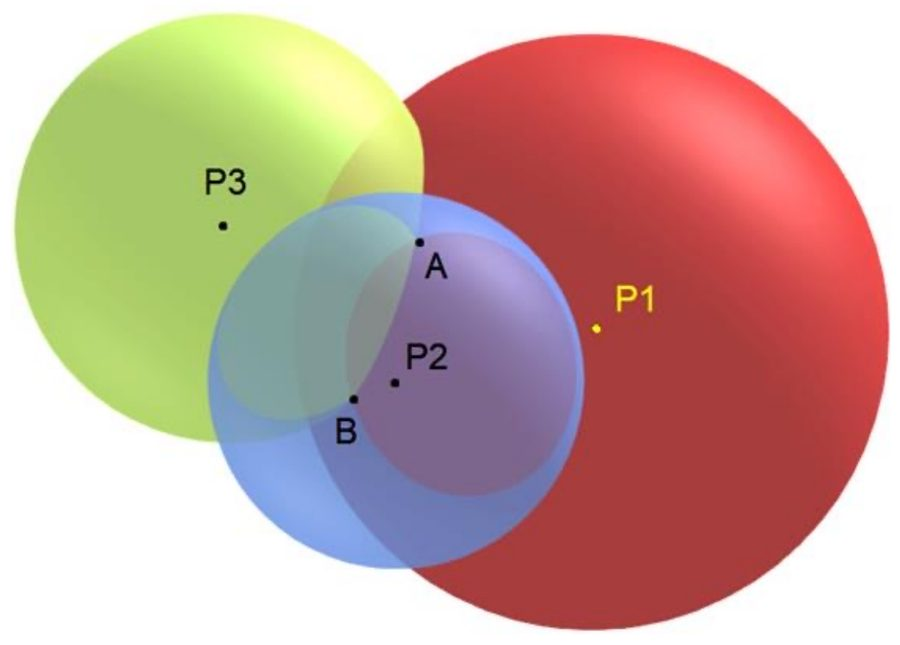
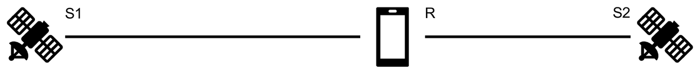
Bidirectional synchronisation
Measure the round trip, split it in half
You cannot time a one-way trip without a synchronised watch at the other end. But you can time a round trip on your own watch: throw a ball, it comes back, you know how long the whole trip took.
If the way there and the way back take equally long, half the round trip is the one-way delay, and the rest of the timestamps reveal the offset.
- We cannot measure the unidirectional delay unless sender and receiver are already synchronised, but we can measure the round-trip delay.
- B sends T1 (its clock); A records the arrival T2 and replies at T3 (its clock) with T1, T2, T3; B records T4.
- Assumptions: the delay is identical in both directions, and the clock drift does not change between messages.
- A simple system of linear equations:
T2 = T1 + D + o T4 = T3 + D - oSolution:o = ((T2 - T1) - (T4 - T3)) / 2 D = ((T2 - T1) + (T4 - T3)) / 2
- If the delays differ, the formula silently returns o + (DB→A - DA→B) / 2: half of any asymmetry becomes offset error.
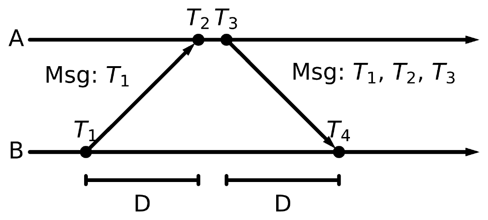
Network Time Protocol (NTP)
Bidirectional synchronisation over the internet
NTP is how your laptop knows the time: it asks a time server, using exactly the round-trip trick from the previous topic.
The internet is a busy road, so some answers come back late in one direction only. NTP asks several times and several servers and trusts the cleanest answers. SNTP, its little sibling, just asks once.
- Client/server model: the system queries a time server that has access to a good clock (for example GPS).
- Uses bidirectional synchronisation, and can synchronise systems over variable-latency networks.
- Achieves ms accuracy over the public internet and <ms accuracy over local networks.
- Vulnerable to congestion, asymmetric routes and asymmetry in general (the bidirectional formula assumes equal delays).
- NTP queries multiple time servers, keeps a history of clock drift and applies corrections. One of its filters prefers the samples with the smallest round-trip delay, since those had the least room for asymmetric queuing.
- Simple NTP (SNTP) is a simplified client that makes one query to a single time server: less accurate, but more lightweight, which suits small embedded devices.
Precision Time Protocol (PTP)
Same maths, better timestamps
PTP uses the same round-trip idea as NTP, but on a local network with a dedicated time master nearby, and with the stopwatch built into the network hardware itself.
Because the timestamp is taken the instant the message passes the wire, all the waiting inside the operating system no longer counts. That is how PTP reaches nanoseconds.
- The time server (master) broadcasts a message with its timestamp T1; devices timestamp its arrival T2, then send a request at T3 to identify the round-trip delay; the master returns its receive time T4. A variation of bidirectional synchronisation:
o = ((T2 - T1) - (T4 - T3)) / 2
- Same assumptions as NTP: symmetric delay and constant offset.
- Better accuracy than NTP (ns or better):
- a time master in the local network mitigates queuing and routing delays;
- more accurate timestamps at hardware level mitigate OS-related delays.
- PTP is standardised as IEEE 1588.
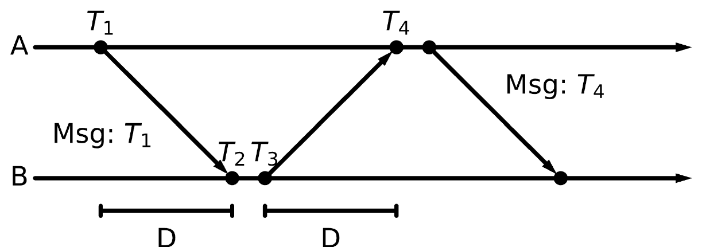
Relative and periodic synchronisation
Reference-based synchronisation
Agree with each other, not with the world
On a film set, the camera and the microphone record separately. The clapperboard makes one sharp event that both of them capture; lining up the clap in the picture with the clap in the sound synchronises them.
Nobody needs to know what time it actually was. They only need to agree with each other.
- GPS, NTP, SNTP and PTP provide synchronisation with true time.
- Relative synchronisation can be achieved by capturing a shared event, which can be natural or induced.
- The relative offset between the clocks of two devices is the difference between their timestamps of the event.
- Example: the cinema clapperboard creates a distinct audio-visual event used to synchronise the clocks of the camera and the microphone.
- A packet broadcast can serve as a synchronisation event: that is the next topic.
Reference-Broadcast Synchronisation
The beacon is the clapperboard
A third device just shouts "beep!". A and B each note when they heard it on their own clock, then compare notes.
It does not matter how long the shouter took to get the beep out: that delay was the same for both listeners, so it cancels when they compare. Only small differences in how quickly each listener noticed the beep remain.
- A reference device R broadcasts a synchronisation beacon.
- Devices A and B take a local timestamp of the time they receive it, T1 and T2.
- A sends T1 to B, which calculates its relative offset to A:
o = T2 - T1
- Sender-related delays (scheduling, processing, queuing, access) affect the beacon the same for every receiver, and the propagation delay is almost the same at short distances.
- Errors are limited to the differences in receiver-oriented delays. Compared with sender-receiver methods, the largest and most variable delays are removed from the critical path.
- RBS was proposed by Elson, Girod and Estrin (2002) for wireless sensor networks.
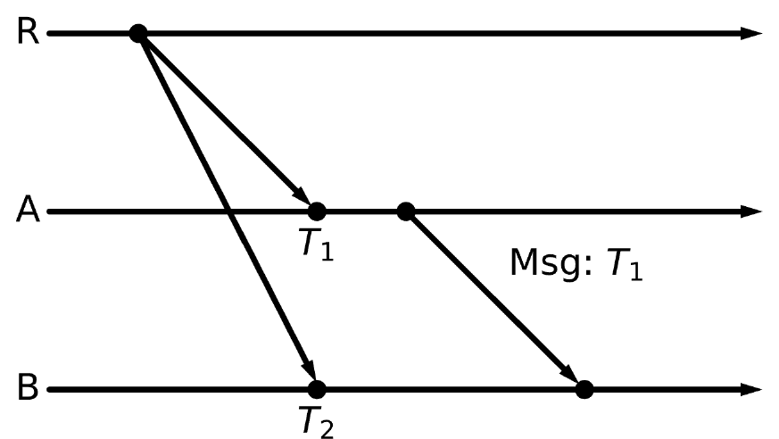
Periodic synchronisation
The sync interval bounds the error
Synchronising once is not enough: the moment you stop, the clocks start drifting apart again. So you check in regularly, like resetting a cheap watch every Sunday.
Check in more often and the clocks never stray far, but every check-in costs messages and energy. The art is choosing the slowest rhythm that is still good enough.
- Time error (offset) accumulates over time; a synchronisation event brings it (close to) zero.
- Periodic synchronisation is required to maintain synchronicity. The time error is contained by the synchronisation frequency:
max error ≈ residual + relative drift × sync interval interval ≤ (tolerable error - residual) / drift
- Trade-off: the cost of synchronisation versus the tolerance to synchronisation error.
- Reading slide 30's chart: it is titled "10 ppm drift" and shows 12 ms after 2 minutes and 24 ms after 4 minutes. At 10 ppm the error after 2 minutes is 10 × 10-6 × 120 s = 1.2 ms; the plotted values correspond to 100 ppm. The shape, a sawtooth whose peak grows with the interval, is the point of the figure.
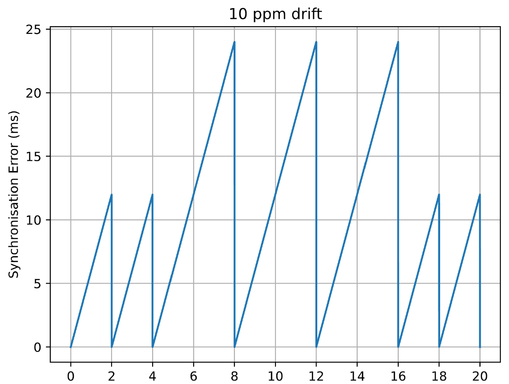
Conclusion: the trade-offs
Only as much synchronisation as the application needs
Every bit of synchronisation costs something: hardware, messages, battery. So ask what the application really needs. Do the devices need the time of day, or only to agree with each other? To the nanosecond, or to the second? Checked every minute, or every day?
- Time synchronisation might be necessary for applications and for system-level processes.
- Trade-offs:
- real-time synchronisation requires more resources than relative synchronisation;
- high-precision synchronisation requires more resources than loose synchronisation;
- the frequency of synchronisation bounds the sync error, but requires resources.
| Method | Gives | Typical accuracy | Cost |
|---|---|---|---|
| GPS | true time | high (1 hop to atomic clocks) | receiver, energy, sky view |
| NTP / SNTP | true time | ms (internet), <ms (LAN) | network access, messages |
| PTP | true time | ns or better | local master, hardware timestamps |
| RBS | relative time | receiver-delay differences | a broadcast plus timestamp exchange |
Cheat sheet
The formulas and numbers worth memorising
Timer
1000 at 32768 Hz: 30.5 ms. One-off: fires once. Periodic: reloads.
Ticks
Higher frequency: finer resolution, more energy.
ppm
32768 Hz ±20 ppm: 32767.34464 to 32768.65536 Hz.
Accumulated error
20 ppm: 1.73 s/day, 12.1 s/week. Linear in time.
Temperature and ageing
FC-135 worst cases. All sources add up.
Relative drift
Two ±20 ppm clocks: up to 40 ppm apart.
One-way
Offset error = delay estimation error.
Delay
OS and access delays vary; multi-hop delays add up.
Two-way (NTP, PTP)
Assumes symmetric delay; asymmetry error = (Dfwd - Dback) / 2.
RBS
Sender delays cancel; only receiver differences remain.
Periodic sync
10 ppm every 2 min: 1.2 ms. Interval ≤ tolerable error / drift.
TAI and UTC
UTC has leap seconds; local time zones follow UTC (CET = UTC+1).
Figures cropped from the lecture slides "Time Synchronisation" by Xenofon Fafoutis, DTU Compute, with their original sources noted. For personal study.